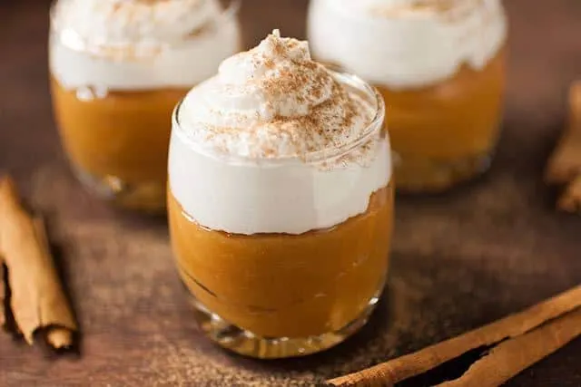

INICIO
Suspiro Limeño

El suspiro a la limiña es un postre que alegrará el alma a todos los comensales
Ingredientes
- 1 lata (400 g) de leche condensada.
- 1 lata (400 g) de leche evaporada.
- 3 yemas de huevo.
- 1 cda. de esencia de vainilla.
- 1/2 cdta. de canela en polvo (opcional).
- 2 claras de huevo (a temperatura ambiente).
- 4 cdas. de azúcar granulada.
- 3 cdas. de vino Oporto (o Pisco, o 1 cda. de vainilla si es sin alcohol).
- Canela en polvo (para decorar).
Pasos
- En una olla a fuego medio, mezcla la leche condensada y evaporada.
- Revuelve constantemente con una cuchara de madera hasta que espese (unos 20-25 min). Debe quedar como un dulce de leche espeso (pruébalo: al pasar el dedo, debe dejar un surco).
- Retira del fuego y agrega las yemas batidas y la vainilla. Mezcla rápido para evitar grumos.
- Vierte la mezcla en copas individuales o un molde grande. Deja enfriar a temperatura ambiente.
- En un bol, bate las claras a punto de nieve firme.
- Agrega el azúcar poco a poco, sin dejar de batir, hasta que quede brillante.
- Incorpora el vino Oporto (o Pisco/vainilla) y mezcla suavemente.
- Con una cuchara o manga pastelera, cubre el manjar blanco frío con el merengue.
- Espolvorea canela en polvo al gusto.
- Refrigera al menos 1 hora antes de servir (el contraste frío/cremoso es clave).